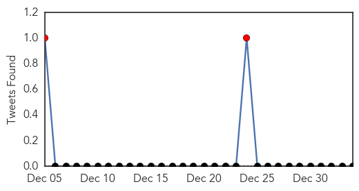
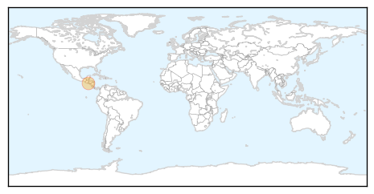
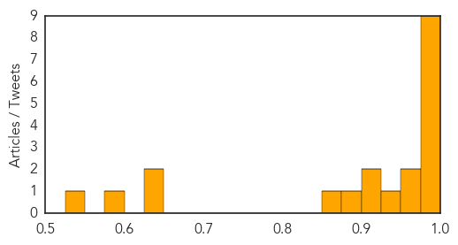

Chikungunya
30-Day Web Trend
30-Day Twitter Trend
2 alerts, 0 warnings

Article Locations
Article Confidences

Top Articles:
Top Tweets:
-
No tweets found for Jan 03, 2015
Influenza
30-Day Web Trend
30-Day Twitter Trend
2 alerts, 0 warnings

Article Locations

Article Confidences
Top Articles:
- 0.998
- Cedar Rapids, Iowa News, Sports, and Weather
- 0.998
- Deadly Flu Stomping SE Michigan – Deadline Detroit
- 0.997
- Flu declared an epidemic; Aiken County cases on the rise
- 0.996
- Major Health Partners not enacting highest restriction level for flu
- 0.992
- Grand Junction hospital limits visitors due to flu
- 0.992
- Flu reaches epidemic levels across the mainland U.S.
- 0.990
- Flu prompts local hospitals to ban children from visiting
- 0.983
- Spate of new deaths raises Indiana flu toll to 36
- 0.983
- Sussex hospitals curb visitation in wake of flu spike
- 0.973
- Pharmacies well prepared for flu
- 0.967
- News, Sports, Jobs, Ohio, Community Information - The Marietta Times
- 0.937
- Child’s death becomes third in B.C. linked to enterovirus D68
- 0.918
- Guangdong Slaughters For-Export Chickens Infected with H7N9 Virus : News : Yibada
- 0.916
- Flu Season Will be 'Significant' With Weak Vaccine, Tamiflu Shortages
- 0.892
- Local Hospital Restrictions Target Flu
- 0.869
- Hong Kong culls 19,000 chickens after bird flu detection
- 0.642
- Avian flu detected in Benton City backyard flock
- 0.625
- Bird flu strikes backyard flock in Washington
- 0.594
- Seoul Grand Park Closes Over Bird Flu Concerns
- 0.543
- Guangdong culls chickens ...｜Society｜WCT
Top Tweets:
-
No tweets found for Jan 03, 2015